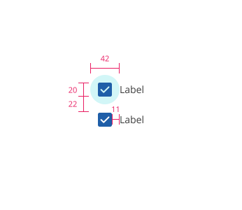
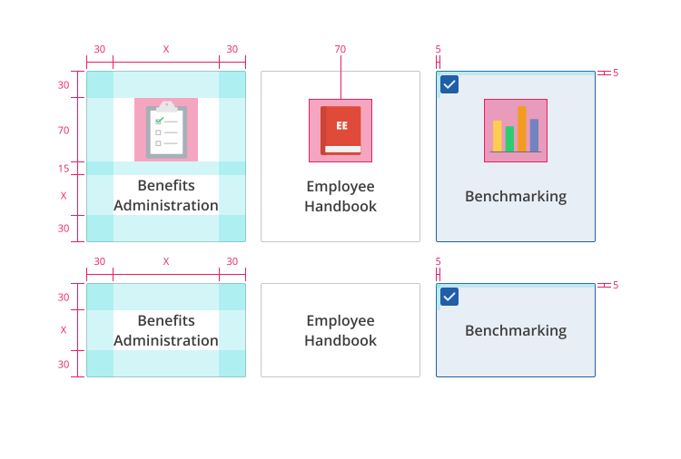
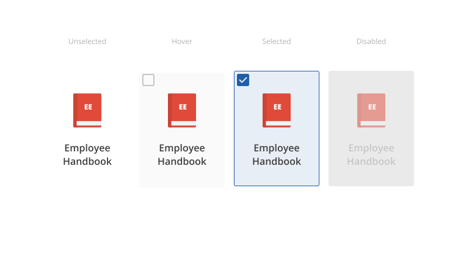
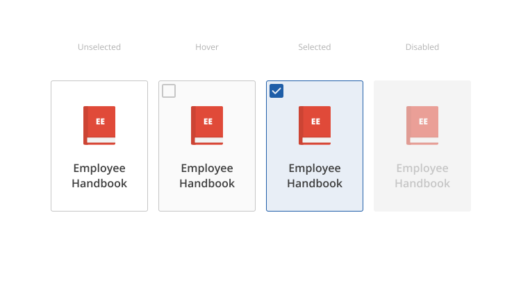

Checkboxes
What-wha-what-what-what's it all about?
Design
Toolkit
What are checkboxes?
Checkboxes are selection controls that allow the user to make multiple selections from a list of options. Unlike some other selection controls, checkboxes display all of the options, so the user has a chance to see all options before and while making their selections. They most commonly appear in forms, but sometimes they appear in other places in our products.
Types of checkboxes
Standard
These are the most common checkboxes. They allow the user to make selections and easily move on to the next task.
More details
Gallery
These checkboxes often feature an icon, and are generally used when they control the only selection the user can make on that page.
More details
Standard checkboxes
Overview
Standard checkboxes are the most common checkboxes. They allow the user to make their selections and move on to the next task.
Best practices:
- Use when the number of options is easy for the user to process, generally fewer than 10.
- Unless you want to emphasize the selection, these are usually the checkboxes you should use.

All values are in pixels.
States
Active
- Selected: product color (typically 500 level)
- Unselected: ZUI Gray 500
Hover
- Selected: product color (typically 400 level)
- Unselected: ZUI Gray 600
Disabled
- Selected: ZUI Gray 300
- Unselected: ZUI Gray 200
Gallery checkboxes
Overview
Gallery checkboxes are more prominent than standard checkboxes. They are generally used when they control the only selection the user can make on that page.
Best practices:
- Because they’re so large, they should generally be reserved for when that selection is the only one the user can make on that page.
- Icons both emphasize the selection and reinforce the contrast between the options.

All values are in pixels.
States
Gray Background
Unselected
- Background color: White
- Font color: ZUI Gray 800
- Font weight: 600
- Dropshadow
- Color: Black at 16%
- X-Axis: 0px
- Y-Axis: 1px
- Blur radius: 3px
- Spread radius: 0px
Hover
- Background color: #FAFAFA
- Checkbox color: ZUI Gray 300
- Font color: ZUI Gray 800
- Font weight: 600
- Dropshadow
- Color: Black at 16%
- X-Axis: 0px
- Y-Axis: 3px
- Blur radius: 6px
- Spread radius: 0px
Selected
- Border color: product color (typically 500 level)
- Background color: product color (typically 50 level)
- Checkbox color: product color (typically 500 level)
- Font color: ZUI Gray 800
- Font weight: 600
Disabled
- Background color: ZUI Gray 100
- Illustration opacity: 50%
- Font color: ZUI Gray 300
- Font weight: 600

Gallery checkboxes on a gray background.
White Background
Unselected
- Border color: ZUI Gray 300
- Background color: White
- Font color: ZUI Gray 800
- Font weight: 600
Hover
- Border color: ZUI Gray 300
- Background color: #FAFAFA
- Checkbox color: ZUI Gray 300
- Font color: ZUI Gray 800
- Font weight: 600
Selected
- Border color: product color (typically 500 level)
- Background color: product color (typically 50 level)
- Checkbox color: product color (typically 500 level)
- Font color: ZUI Gray 800
- Font weight: 600
Disabled
- Background color: ZUI Gray 100
- Illustration opacity: 50%
- Font color: ZUI Gray 300
- Font weight: 600

Gallery checkboxes on a white background.
Table of Contents
ZuiCheckbox
Extends ZuiFormAssociatedElement
Example
<zui-checkbox checked></zui-checkbox>
checked
Whether or not the checkbox is checked